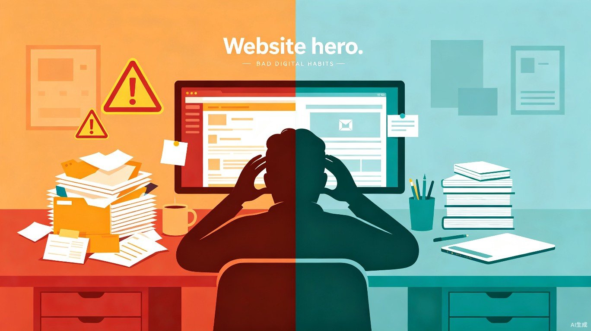

避开这些常见误区，让你的 Mac 始终保持最佳状态

很多 Mac 用户在长期使用过程中，会不知不觉养成一些不良习惯。这些习惯看似无关紧要，实则会影响系统性能、数据安全，甚至缩短设备寿命。以下是八个最常见的 Mac 使用坏习惯，以及对应的改进建议。
及时纠正这些问题，让你的 Mac 更稳定、更安全、更持久
问题：删除文件后长期不清理废纸篓，导致磁盘空间被大量已删除文件占用，尤其在小容量 SSD 上表现明显。系统可能因此频繁提示「存储空间不足」，甚至影响虚拟内存交换效率，造成卡顿。
解决方法：
问题：把桌面当成 Windows 的「D盘」，所有文件直接扔在桌面上。桌面文件实际存储于 ~/Desktop 目录，文件过多会拖慢 Finder 启动速度，也影响截图和录屏时的视觉整洁度。依赖桌面存放文件还容易导致重要资料丢失。
解决方法：
问题：看到系统更新提示就选择「稍后提醒」或直接关闭。macOS 更新不仅包含新功能，更重要的是修复安全漏洞。长期不更新会让系统暴露在已知安全风险中，也可能导致部分新应用无法正常运行。
解决方法：
问题：为了省钱或图方便，从非官方渠道下载破解软件或来路不明的安装包。这类软件往往捆绑恶意程序，可能窃取隐私数据、植入后门，甚至加密文件进行勒索。macOS 虽然相对安全，但并非绝对免疫。
解决方法：
codesign 或右键「显示包内容」检查可疑应用的签名信息。问题：认为「我的电脑不会出问题」或「云盘已经够用了」，忽视本地备份。硬盘故障、系统崩溃、误操作删除都可能导致数据永久丢失，而云盘同步误删也会同步删除云端副本。
解决方法：
问题：Mac 开盖即用、合盖即走的设计让用户养成从不关机的习惯。长期不重启会导致内存泄漏累积、后台进程膨胀，系统可用内存逐渐减少，表现为应用启动变慢、切换卡顿、甚至偶发性冻结。
解决方法：
问题：频繁使用各类「清理大师」扫描系统，一键清理所谓的「垃圾文件」。过度清理可能误删系统缓存、应用偏好设置，甚至破坏应用正常运行所需的临时文件。macOS 的缓存机制经过优化，很多「垃圾」其实是加速系统运行的必要文件。
解决方法：
问题：安装应用时弹出权限请求窗口，不看内容直接点「允许」。一些应用会请求超出其功能所需的权限，如一个计算器应用索要「完全磁盘访问权限」或「摄像头权限」，这往往是隐私泄露的隐患。
解决方法：
良好的使用习惯是 Mac 长期稳定运行的基础。定期清理废纸篓、规范文件管理、及时更新系统、谨慎安装软件、坚持数据备份、适时重启设备、理性使用清理工具、严格管控应用权限——做到这八点，你的 Mac 将始终保持最佳状态，数据安全也有坚实保障。